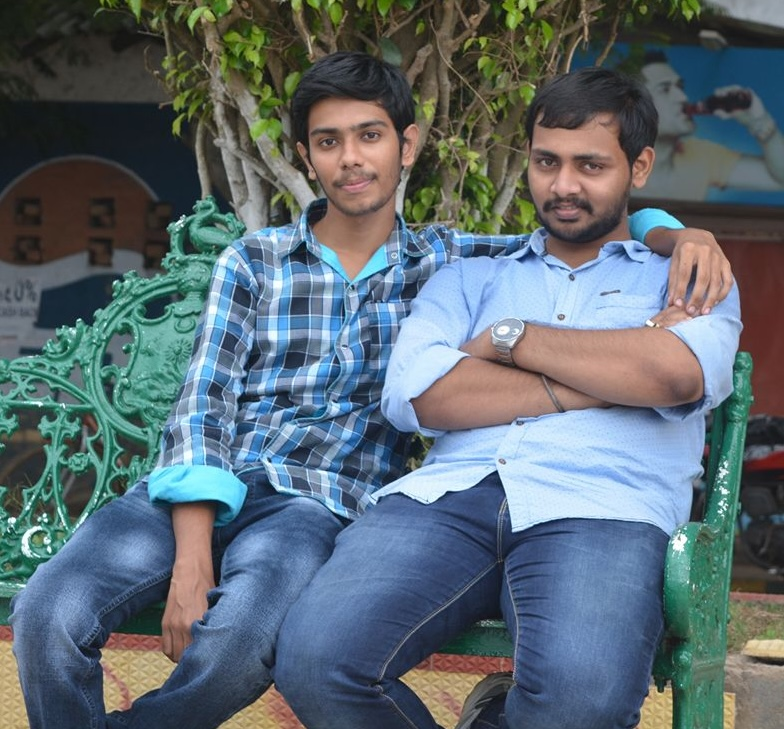

About me
Bio Data |
|
|---|---|
| Name | Prashanth K.P.S.V.D. |
| Date of Birth | 15 August |
| Home Address | Flat no, 401. Ashoka Square, Rajamma Dream Villas, Chintlakunta, L.b.Nagar |
| Hobboies |
|
Why do I start writing stories?

I am going to start telling my journey from the beginning of my life.
It had always been my reputation to be the talkative one, with words streaming from my mouth nonstop. Unfortunately, this tendency led to me losing friends because my classmates avoided me a lot. After all, they thought I would talk too much and distract them. People did not get me, and I felt alone in this world. I was not trying to talk to everyone; I was just trying to share my experiences with them.
I found that storytelling was a powerful release during this time of loneliness. But I was facing challenges: my failure to write well in English. My thoughts were an infinite array of colours, but when I put them on paper, they became less colourful.
Gradually, years passed, and suddenly something changed. I got to know Prasanth, a gentle soul with a passion for writing and a creative mind full of ideas. Expert writer“Prasanth. V.S.N.P.” used “Google Blogger” as a blank page, putting his thoughts on display for all to see. The young man felt so strongly that he decided to join me on the same platform, where I shared my goals, ideas, and life experiences. My voice disappeared in the noise of a classroom, but Google Blogger became my stage, where it found its true audience. Thank you for inspiring and motivating me with your story-writing suggestion.
His is my friend blog. (Access this blog story freely here)
Google Blogger : Prasanth.V.S.N.P.
After a few days, I stopped posting blogs on the Blogger page.
This is my blog. (You can view the story, but it remains unchanged.)
Google Blogger : Prashanth.K.P.S.V.D.
 I began crafting the story with specific titles, high-quality images, and a distinct narrative.
I began crafting the story with specific titles, high-quality images, and a distinct narrative.
After composing a story, I shared it with my friend and also called him Big Brother, "Chiranjeevi. S.D.". He suggested publishing my stories publicly to attract interest. He believed this would lead to positive feedback and achievements. However, upon posting, there was no response for several days. When I discussed this with Chiru, he advised me to try a different platform where my work could reach a wider audience. He recommended “Medium,” a platform where I eventually achieved significant success. I give my brother a huge amount of thankfulness for this helpful advice.
Medium Blog : Medium Online Page
After a few days, I aimed to develop a website where everyone could freely access and explore my stories without needing to log in.
The website features five distinct genres: suspense, mystery, love and break, universal, and author-specific stories.
Originally published at My Blogger Website (Ghostwriter)
I published about 20 stories and received substantial feedback from my readers. I am grateful to everyone who has read and supported my stories.
About My Dream,
Beginning up a dual path, my goals are to become a published author and narrative designer for websites. My goal is to create one of a kind digital narratives by fusing interactive online features with standard storytelling techniques. Readers the world will have immersive experiences thanks to this fusion of technology and literature.
Conclusion
I will describe my name as "K.P.S.V.D. Prashanth," and my full name is “Korapati Pavan Sai Venkata Durga Prashanth.” Expect to see this name credited in upcoming stories very soon